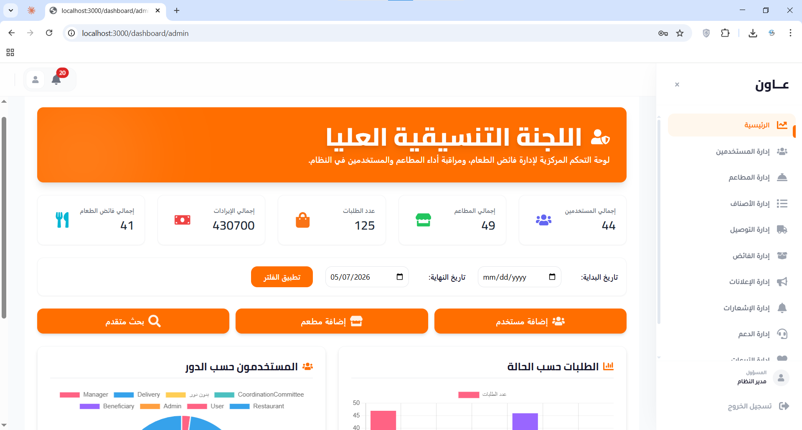
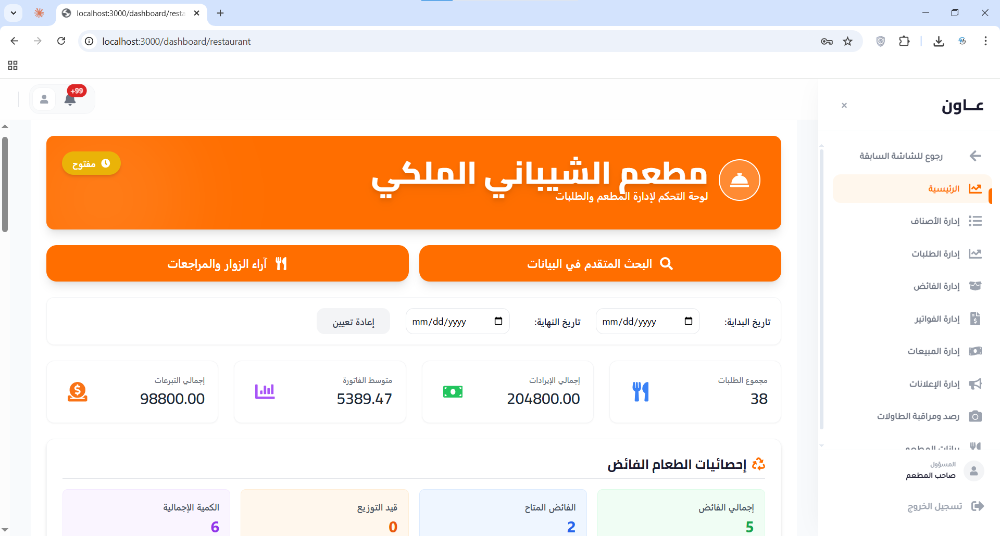
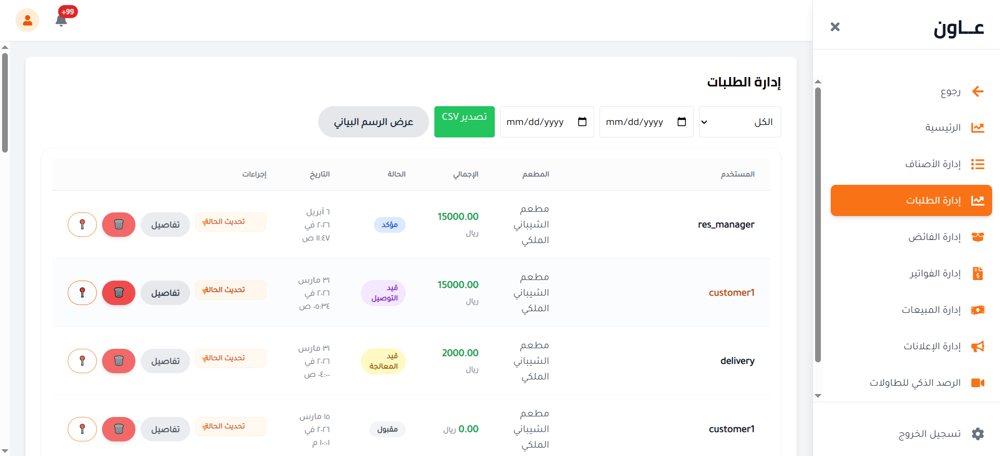
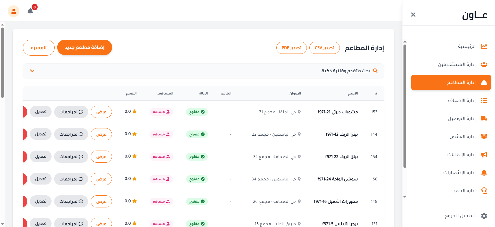
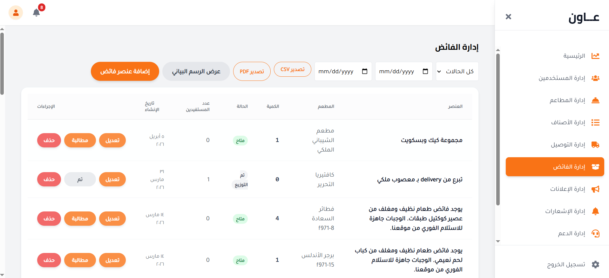

استعراض المنصة
لوحات تحكم وواجهات قوية
لقطات حقيقية من منصة عاون — تشمل لوحات تحكم الويب، لوحات الإدارة، وشاشات التطبيق.

لوحة الإدارة المركزية

لوحة تحليلات المطعم

نظام إدارة الطلبات

دليل إدارة المطاعم

إدارة فائض الطعام

نظام مراقبة الطاولات الذكي
لوحة الإدارة المركزية
لوحة تحليلات المطعم
نظام إدارة الطلبات